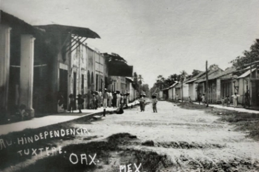
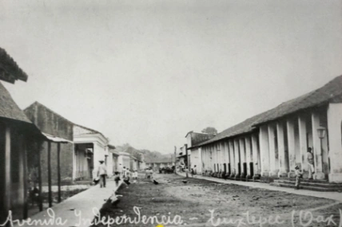
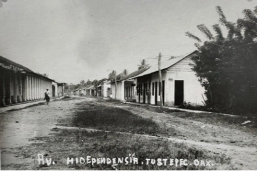
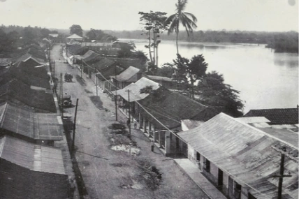
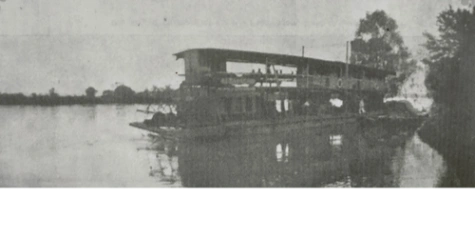
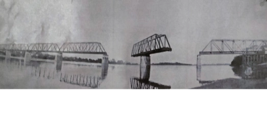
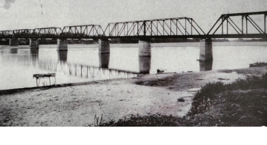
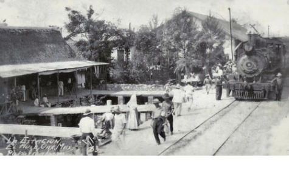

 Avenida Independencia a la altura de la calle Juárez, hacia el mercado Central Fotografía autor desconocido.
 Avenida Independencia en el centro, nótese el pasto sobre la calle y los postes rústicos del servicio telefónico Fotografía autor desconocido.
 Avenida Independencia vista desde Juárez hacia la calle Hidalgo Fotografía autor desconocido.
 Barco de vapor «Tuxtepec» botado en 1895 Poseía una rueda de propulsión trasera y proa de caparacho. Este tipo de embarcaciones de pequeño calado llegaban hasta Santa Rosa, en Ojitlán. Foto: Reminiscencias de Cosamaloapan / Pablo Santamand Alavés
 Puente ferroviario con un segmento abierto para el cruce de embarcaciones sobre el río, 1908 Uno de las columnas poseía un sistema de engranaje que permitía girar una parte para el cruce de las embarcaciones. Fuente: Jantha Plantation
 Puente ferroviario sobre el río Papaloapan, 1905 Fue construido entre 1899 y 1901 en el punto llamado «El Hule», hoy agencia municipal del Papaloapan. Fotografía: Charles. B. Waite
 Estación «El Hule» (Papaloapan), 1930 ca. Antigua estación de madera en la comunidad de Papaloapan, inmediata al cruce del río. Foto: México Fotográfico.
 Barco de vapor anclado frente a Tuxtepec, 1905 Estos vapores realizaban cabotaje fluvial entre las poblaciones de la Cuenca del Papaloapan.